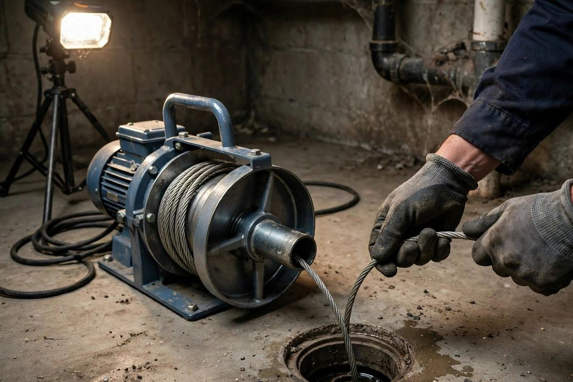
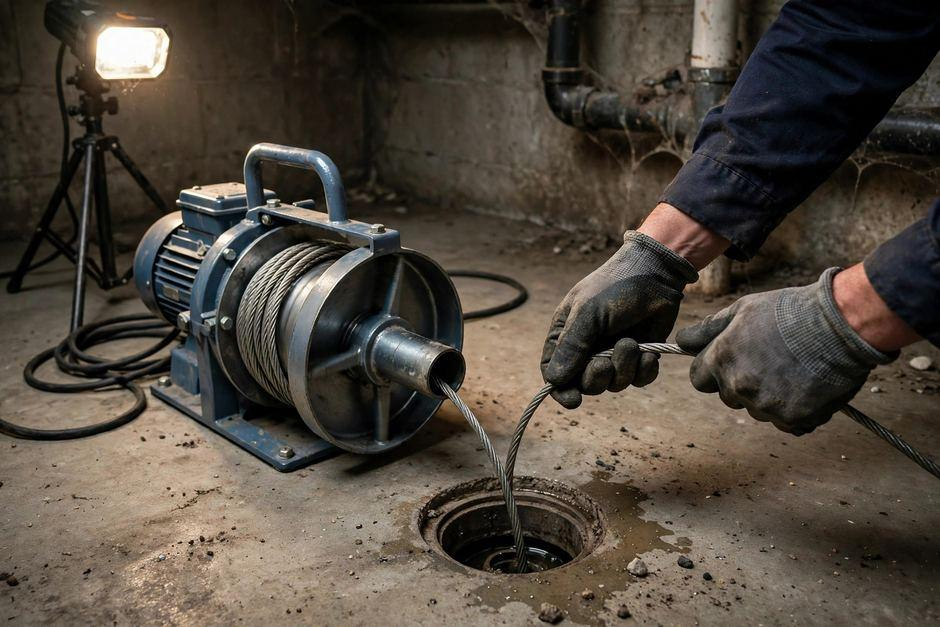
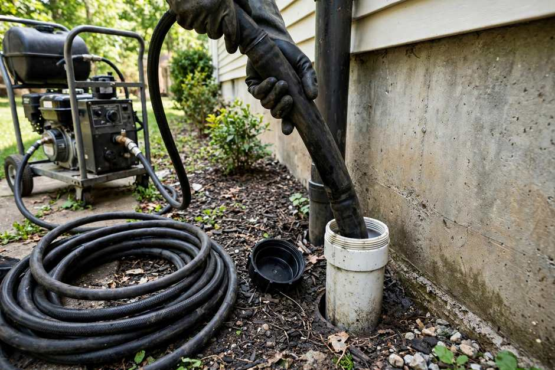
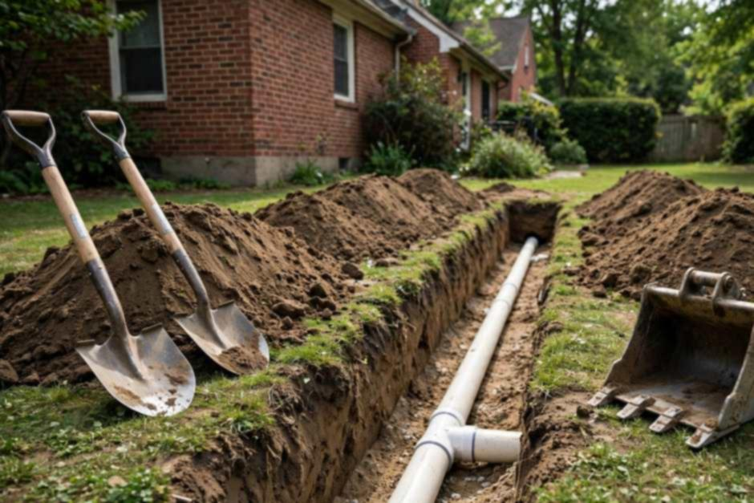

Drain Cleaning in Belleville, IL
Drain Cleaning Belleville IL for Slow and Blocked Drains
A slow kitchen sink, a shower that holds water, or a toilet that drains with a gurgle can signal buildup inside a drain line. Hinkle Plumbing Company clears blockages in Belleville, IL homes and checks whether a camera inspection is needed to see the line. Call (618) 677-6556 during office hours to arrange a visit.
1610 W Main St, Belleville, IL 62220(618) 677-6556Monday through Friday, 8:00 AM to 4:30 PM. Closed Saturday and Sunday.
What Is Covered
Drain Cleaning for Belleville Homes
Drain cleaning clears buildup and blockages from inside drain lines so water moves away from fixtures. The work focuses on the drain that is slow or blocked, with attention to what caused the restriction and whether the line needs a closer look.
Kitchen Sink Drains
Grease, food particles, and soap residue collect on kitchen drain walls and narrow the passage for water. Cleaning removes buildup from the line and restores drainage at the sink, with attention to the trap and branch line beyond it.
Bathroom Sink Drains
Hair, toothpaste, and soap residue gather in bathroom sink drains and slow the flow from the basin. Cleaning clears the trap and the line beyond it, and the drain is checked for residue left along the walls.
Shower and Tub Drains
Hair and soap residue build up in shower and tub drains, and water stands in the base during use. Cleaning removes material from the drain and the line below it, and flow is checked after cleaning.
Toilet Drain Lines
A toilet that flushes weakly or gurgles can point to a restriction in the drain line beyond the fixture. Cleaning addresses that line, separate from parts inside the tank or bowl, and the flush is checked after clearing.
Floor and Laundry Drains
Floor drains and laundry drains collect lint, grit, and residue in traps and branch lines. Cleaning removes settled material and checks whether water leaves the drain as it should, with attention to dry traps and odors that return.
Main Drain Lines
When fixtures drain slowly, the restriction may sit in the main drain line. Cleaning addresses that line, and a camera check can show roots or buildup. In older homes, expect to check for cast iron drains and clay laterals.
About Hinkle Plumbing Company
A Belleville Plumbing Company Focused on Drain Work
Hinkle Plumbing Company is based in Belleville, IL, and provides drain cleaning for homes in Belleville. Calls are handled during office hours, and visits are arranged by phone from the office on W Main St.
Hinkle Plumbing Company works from 1610 W Main St in Belleville, in St. Clair County, Illinois, and serves homes in Belleville. The office is open Monday through Friday, 8:00 AM to 4:30 PM. Closed Saturday and Sunday. Drain work starts with the fixture that is slow or blocked, and the line beyond it is checked for buildup, roots, or damage that explains the restriction. In older Belleville homes, expect to check for cast iron drains and clay laterals, and for galvanized supply lines affecting repair choices.

How we workDrain line being checked inside a Belleville home.
How Drain Cleaning Works
Steps for Clearing a Slow or Blocked Drain
The steps flex with the condition of the job, but the sequence stays the same.
Arrange a Visit by Phone
Call (618) 677-6556 during office hours and describe which fixtures drain slowly, whether other fixtures are affected, and whether water backs up or gurgles. That detail helps shape the visit and the lines to check first.
Check the Affected Fixtures
The visit starts with the fixtures that drain slowly and the lines connected to them. Water behavior at each fixture is noted, along with odors, gurgling, and whether backups appear at floor drains or in other rooms.
Clear the Blockage
A drain cable is used to break through buildup and clear the passage inside the line. The cable is worked through the restriction with care for older lines, and the drain is checked as material is removed.
Check Flow After Clearing
After clearing, water is run through the fixture to confirm drainage has returned and to watch for flow that points to material left in the line. If flow stays slow, the line is checked before the visit ends.
Review What Was Found
Findings are reviewed, including what blocked the line and whether a camera check or a separate method is worth discussing. Care steps for the drain are covered, with attention to grease, hair, and material that collects in traps.
Methods and Checks
Drain Cleaning Methods Used in Belleville Homes
Drain cleaning uses a cable to open a blocked line. Hydro jetting is a separate service that scours a line with pressurized water, and it requires a camera inspection first to confirm the line can take that method.
Cable Clearing
A flexible cable is fed into the drain to break through buildup and restore passage through the line. The cable follows bends in branch and main lines, and the drain is checked after clearing.
Trap Checks
Traps hold water that blocks sewer gas and collect hair, grit, and residue. A trap is checked and cleared as part of drain work, and the seal is checked after cleaning so the fixture drains as it should.
Camera Checks for Main Lines
A camera check shows the inside of a main drain line, including roots, breaks, bellies, and buildup that a cable cannot show. The view helps explain repeat blockages and whether cleaning addresses the cause or whether work needs discussion.
Hydro Jetting as a Separate Service
Hydro jetting scours the inside of a line with pressurized water to remove grease and buildup. It is separate from cable clearing, and it requires a camera inspection first to confirm the line is sound enough for that method.
Root Cutting in Older Lines
Roots enter jointed clay laterals and narrow the line, and a cable with a cutting head can clear root material. In older homes, expect to check for clay laterals and root entry, with a camera check after cutting.
Buildup Control Between Visits
Grease, coffee grounds, hair, and wipes collect in drains and add to buildup. Keeping grease out of kitchen drains, using strainers in showers, and placing wipes in trash rather than toilets helps limit material that reaches drain lines.
Common Drain Patterns
When Belleville Homeowners Call About Drains
Most drain calls follow a small set of patterns. The examples below describe common patterns in Belleville homes, not specific jobs, and show how the cause is checked before cleaning begins.

A Kitchen Sink That Drains Slowly
A common call describes a kitchen sink that drains slowly after dishwashing, with water rising in the basin and falling away in a slow swirl. Grease and food residue along the drain walls are a common cause, and the trap and branch line are checked for buildup that narrows the passage. Cable clearing removes material from the line, and flow is checked after clearing to confirm the sink drains as it should. Care steps for grease and food residue are covered before the visit ends.
Several Fixtures Draining Slowly at Once
A common call describes several fixtures draining slowly, with gurgling at a toilet and water rising in a shower when a toilet flushes. That pattern points past a single fixture toward the main drain line, and the line is checked for roots, buildup, or damage narrowing the passage. In older homes, expect to check for cast iron drains and clay laterals. A camera check can show the inside of the line, and cable clearing or a separate method is discussed based on what the check shows.
Signs to Check
Drain Problems That Point to a Blockage
Most calls fall into a few patterns. Knowing which pattern applies decides what the visit involves.
Water That Lingers in Sinks and Showers
Water that stands in a sink or shower base and leaves slowly often signals buildup narrowing the drain line. The fixture and the line beyond it are checked, and cleaning removes material that restricts flow through the trap and branch line.
Gurgling at Toilets and Drains
Gurgling when a toilet flushes or a sink drains can signal air trapped by a restriction in the line. The pattern is checked to see whether the restriction sits in a branch line or in the main drain line that serves the home.
Odors That Return Near Drains
Odors near a drain can come from residue in the trap, a dry trap seal, or buildup in the line beyond the fixture. The trap and line are checked, and the seal is checked after cleaning so the trap holds water.
Water Backing Up Into Fixtures
Water rising in a shower when a toilet flushes, or backing up at a floor drain, can signal a sewer backup pattern in the main line. The line is checked for roots, buildup, or damage, and a camera check can show the cause.
Cost Factors
What Shapes the Cost of Drain Cleaning
Cost depends on the line, the blockage, and the access.
A Single Fixture Drain
Cost factors include which fixture is affected, how far the blockage sits along the branch line, and whether the trap needs clearing. Access to the drain and the amount of buildup in the line shape the scope. Call to discuss the visit.
A Main Drain Line
Cost factors include the length of the line, whether roots or damage are present, and whether a camera check is needed. In older homes, expect to check for cast iron drains and clay laterals. Call to discuss the scope.
Repeat Blockages
Cost factors include whether blockages return, what a camera check shows, and whether further discussion follows. The Sewer Lateral Repair Program may be relevant for a break beyond the property line; check current City program details. Call to discuss the visit.
Reviews from Google
What Customers Say on Google
★★★★★
“Very prompt and responsive, the worker was friendly and informative! Will use this company again!”
★★★★★
“Don did an outstanding job for me when I needed him and highly recommend his business”
★★★★★
“Rated 5.0 out of 5 across 3 Google reviews, all five stars.”
Questions About Drain Cleaning
Drain Cleaning Questions From Belleville Homes

What causes a drain to run slowly in a Belleville home?
Buildup inside the line is a common cause, from grease and food residue in kitchen drains and hair and soap residue in bathroom drains. Roots can enter jointed clay laterals and narrow the main line. In older homes, expect to check for cast iron drains and clay laterals, and for buildup that has narrowed the passage.
When is a camera check used for a drain line?
A camera check is used when several fixtures drain slowly together, when blockages return after clearing, or when the cause sits in the main line and needs a view inside the pipe. Hydro jetting is separate from drain cleaning and requires a camera inspection first to confirm the line can take that method.
Is a permit needed for drain cleaning in Belleville?
Permit questions are worth checking with the City before work starts. The City of Belleville requires a permit before plumbing work begins (§152.05(A)); direct replacement of a toilet, sink, faucet, or other appliance is exempt, except hot water heaters require an electrical or gas permit (§152.05(B)(3)). Check with the City for the job at hand.
What shapes the cost of drain cleaning?
The line involved, the cause of the blockage, access to the drain, and whether a camera check is needed all shape the scope of the work. Older lines and repeat blockages can add checks to the visit. Call (618) 677-6556 during office hours to discuss the visit and the scope involved.
Related services
Other Plumbing Services We Handle

Hydro Jetting in Belleville, IL
A separate service that scours drain lines with pressurized water after a camera inspection first.
Sewer Camera Inspection in Belleville, IL
A camera view inside a main line to show roots, breaks, and buildup before further work is discussed.
Sewer Backup in Belleville, IL
Help for water backing up into fixtures and floor drains, with checks of the main line and its cause.Mon–Fri 8:00 AM–4:30 PM
Call Hinkle Plumbing Company About a Slow Drain
Call (618) 677-6556 to arrange a visit for drain cleaning in Belleville, IL. The office is open Monday through Friday, 8:00 AM to 4:30 PM. Closed Saturday and Sunday. Hinkle Plumbing Company is based at 1610 W Main St, Belleville, IL 62220.

Talk with the local team
Request Drain Cleaning
Call (618) 677-6556 during office hours, Monday through Friday, 8:00 AM to 4:30 PM. Tell us what is happening and we will talk through the next step.